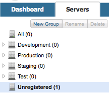
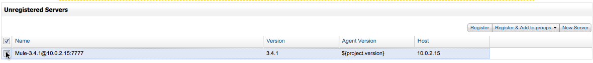
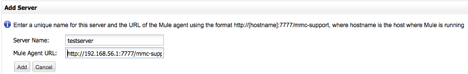

Setting Up MMC-MUle ESB Communications
This page covers:
-
How to register or unregister a Mule ESB server in MMC
-
How to configure communication settings between Mule ESB server and MMC
Assumptions
This document assumes that you are familiar with the basic Architecture of the Mule Management Console, and that you have installed either the trial or production version of the Management Console.
MMC-Server Communications
The Mule Management Console is a Web application that you can use to monitor and manage one or more Mule ESB servers, clusters, and applications. The Management Console communicates with Mule ESB servers via the MMC agent installed in each Mule ESB server. In order for communication between MMC and Mule ESB server to take place, you need to register the server in the Management Console.
Communication between MMC and Mule ESB server begins over HTTP, but after the initial handshake and authentication, the HTTP connection is dropped and a new HTTPS connection is opened.
Registering Mule ESB Servers with MMC
Each Mule ESB server can only be registered with one MMC, but each MMC can manage an unlimited number of Mule ESB servers.
The [trial version] of Mule ESB Enterprise contains a bundled MMC. In the trial version, the Mule ESB server is automatically registered to the bundled MMC. However, if you wish to register more Mule ESB servers to the bundled MMC, you will have to do so manually.
When you run the [production version] of MMC for the first time, it will attempt to detect any Mule ESB servers on the network, but will not try to pair with any server it finds. You must manually register your Mule ESB server.
To pair the MMC with a Mule instance, you provide MMC with the URL of the Mule agent listening on the Mule ESB server. The default port is 7777, and the path is mmc-support. So, if you wish to register a Mule ESB server on host 16.172.1.25, the URL would be http://16.172.1.25:7777/mmc-support. When you provide the URL to MMC, the Management Console will attempt to pair with the Mule agency in the specified URL, then report success or failure.
To register a Mule ESB server to MMC, follow these steps:
-
Go to the Servers tab.
-
In the left-hand pane is a list of servers divided by groups. If MMC has found any active servers, it will indicate the number of servers found in the Unregistered heading, as shown below.
 -
Click Unregistered. MMC will display a list of unregistered server it has found, if any, including each server’s host and port.
 -
If the server you wish to register is on this list, click the checkbox next to the server name (see location of the mouse pointer above), then click Register in the top right corner. MMC will attempt to register the server, and will report success or failure.
-
If the server you wish to register is not on the Unregistered Servers list, click New Server in the top right corner.
 -
Enter your server’s name and URL manually, then click Add. MMC will attempt to register the server, and will report success or failure.
After you have registered your servers, click All in the left servers group pane to go to the All Servers list, where you should see all the servers that MMC has detected. Additionally, all registered servers will display their status (a red indicator for stopped servers; green for running).
Registering a Mule ESB Server to a New MMC
Each Mule ESB server can only be registered to one MMC at a time. If you want to register a Mule ESB server to a new MMC, you must first unregister it in the MMC that the server is currently registered with. You can do this either in the MMC itself or on the server’s configuration files. Both methods are explained below.
Unregistering a Mule ESB Server
| If the server is part of a cluster, you must disband the cluster before you unregister the server. See Creating or Disbanding a Cluster for details. === |
Unregistering a Server Via the Registered MMC
-
In the MMC where the server is registered, obtain a list of servers that includes the server you wish to unregister, for example by clicking All in the server groups pane.
-
Select the desired server by clicking the checkbox next to the server name.
-
Click Remove, then Unregister Server(s). MMC will ask for confirmation; click Yes.
The server has been unregistered; you can now register it in another Management Console.
Unregistering a Server via The Server’s Configuration Files
It is possible that you are not able to unregister a Mule server via the MMC, for example if the MMC has been undeployed and is no longer available. In this case, follow the steps below.
-
Ensure that the ESB server is not running
-
Go to the director
$MULE_HOME/.mule/.agent. This directory contains Mule ESB server-MMC pairing information. -
Find and delete the file
truststore.jks
After you delete the file, you can register the Mule ESB server to any instance of MMC, following the steps outline above. When you register the server, a new truststore.jks will be created.
Changing the Default ESB Agent Port
A Mule ESB server communicates with MMC using its embedded agent. By default, the agent is enabled and listening on port 7777. You can change the port with the -Dmule.mmc.bind.port parameter for the Java Virtual Machine (JVM). You can do this in two ways, which are listed below.
On the Command Line on Mule Startup
If starting the Mule ESB server from the provided startup script, you can include the port number parameter as a parameter to the startup command as shown below. If running in background, include the parameter after start.
mule@host:/opt/mule-3.4.1/bin$ ./mule start -M-Dmule.mmc.bind.port=7783(If you wish to use more than one parameter, include all parameters as a list separated by whitespace.)
On the Configuration File
Include your parameters in the configuration file $MULE_HOME/conf/wrapper.conf. This distribution includes this file with comments; you can edit the file or add to it as needed.
You must include the agent port parameter as a java.additional parameter. These parameters are defined in the wrapper.conf file in the form wrapper.java.additional.<number>=<name>=<value>, such as wrapper.java.additional.3=-Djava.net.preferIPv4Stack=TRUE.
To add your desired parameter, find the last added additional parameter, which will have the highest number. Then, add your parameter with the consecutive number that equals the highest number +1.
For example, if the number of the last additional parameter is 3, add: wrapper.java.additional.4=-Dmule.mmc.bind.port=<number>
If you wish to include a port range, letting Mule ESB bind to the first available port, use <low port>-<high port>, e.g. 7780-7785.
|
IF you wish to disable the agent on the Mule instance, use the -Dmule.agent.enabled=<boolean> parameter.
|
For more information about the wrapper.conf file, consult the Java Service Wrapper online documentation for the file.
|
Changing the Default Port for MMC
Like all Web apps, the Mule Management Console listens for incoming HTTP connections. If you deployed the MMC in a Web application server, you will access MMC via the Web app server’s listening port, for example 8080 by default in Tomcat. In that case, the only way to change MMC’s listening port is to change your Web app server’s listening port.
If you run the trial version of MMC, MMC is running as an app deployed by the Mule ESB server it is bundled with. By default it listens on port 8585. To modify MMC’s listening port, follow the steps below.
-
Ensure that the Mule ESB server is not running.
-
Open the file
$MULE_HOME/apps/mmc/mule-config.xmlfor editing. -
Find the line that reads:
<jetty:webapps port="${mule.console.bind.port:8585}" -
Change the default port of 8585 to your desired value, then save the file.
See Also
-
Learn how to stop or restart a Mule server or cluster via MMC.
-
Use MMC to organize servers and clusters into groups.
-
Create and manage High Availability (HA) clusters of Mule servers.
-
Learn how to deploy applications to Mule servers.